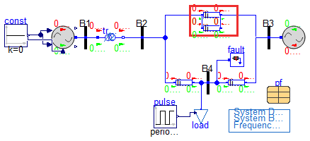
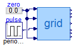
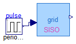

Test models for gridIO block
Information
Extends from Modelica.Icons.ExamplesPackage (Icon for packages containing runnable examples).
Package Content
| Name |
Description |
| testgridIO
|
gridIO special test model, made by stripping the interfaces manually after the model was verified to work with the interfaces. |
| testGridIOasBlock
|
Test the gridIO model |
| testGridIOsiso
|
Test the gridIOsiso model |
 bodeplot_gridIOsiso bodeplot_gridIOsiso
|
Produces the Bode plot for the "grdIOsiso" model |
gridIO special test model, made by stripping the interfaces manually after the model was verified to work with the interfaces.

Information
Extends from Base.Networks.BasePFnFault (Partial SMIB Model with power flow data and a fault component), Modelica.Icons.Example (Icon for runnable examples).
Parameters
| Type | Name | Default | Description |
|---|
| Line Removal Parameters |
| Time | t1 | Modelica.Constants.inf | Time of line removal [s] |
| Time | t2 | Modelica.Constants.inf | Line re-insertion time [s] |
| Integer | opening | 1 | Type of opening (1: removes both ends at same time, 2: removes sending end, 3: removes receiving end) |
| PSS |
| Real | Kw | 9.5 | Stabilizer gain (pu/pu) |
| Real | Tw | 1.41 | Wash-out time constant (s) |
| Real | T1 | 0 | First stabilizer time constant (s) |
| Real | T2 | 0 | Second stabilizer time constant (s) |
| Real | T3 | 0 | Third stabilizer time constant (s) |
| Real | T4 | 0 | Fourth stabilizer time constant (s) |
| AVR |
| Real | vfmax | 7.0 | max lim. |
| Real | vfmin | -6.40 | min lim. |
| Real | K0 | 200 | regulator gain |
Modelica definition
model testgridIO
extends Base.Networks.BasePFnFault(
pf(
redeclare record Bus =
Example1.PFData.Data.BusData.PF_Bus_10,
redeclare record Loads =
Example1.PFData.Data.LoadData.PF_Loads_10,
redeclare record Trafos =
Example1.PFData.Data.TrafoData.PF_Trafos_10,
redeclare record Machines =
Example1.PFData.Data.MachineData.PF_Machines_10),
line_1(
R=Modelica.Constants.eps,
X=3.25,
G=Modelica.Constants.eps,
B=Modelica.Constants.eps),
line_2(t1=Modelica.Constants.inf),
fault(
R=Modelica.Constants.eps,
t1=Modelica.Constants.inf, t2=Modelica.Constants.inf));
import Modelica.Constants.pi;
Plants.GenIO G1(
P_0=pf.machines.PG1,
Q_0=pf.machines.QG1,
v_0=pf.bus.V1,
angle_0=pf.bus.A1,
Kw=Kw,
Tw=Tw,
T1=T1,
T2=T2,
T3=T3,
T4=T4,
vfmax=vfmax,
vfmin=vfmin,
K0=K0);
OpenIPSL.Electrical.Branches.PwLine line_4(
R=Modelica.Constants.eps,
G=Modelica.Constants.eps,
B=Modelica.Constants.eps,
X=3.25/5.5,
t1=t1,
t2=t2,
opening=opening);
parameter Modelica.Units.SI.Time t1=Modelica.Constants.inf
;
parameter Modelica.Units.SI.Time t2=Modelica.Constants.inf
;
parameter Integer opening=1
;
parameter Real Kw=9.5 ;
parameter Real Tw=1.41 ;
parameter Real T1=0 ;
parameter Real T2=0 ;
parameter Real T3=0 ;
parameter Real T4=0 ;
parameter Real vfmax=7.0 ;
parameter Real vfmin=-6.40 ;
parameter Real K0=200 ;
Modelica.Blocks.Sources.Constant const(k=0);
extends Modelica.Icons.Example;
Modelica.Blocks.Sources.Pulse pulse(
amplitude=0.01,
width=50,
period=0.1,
nperiod=1,
startTime=5);
protected
parameter Real S_b=SysData.S_b;
equation
connect(G1.pwPin, B1.p);
connect(line_4.n, line_1.n);
connect(line_4.p, line_1.p);
connect(const.y, G1.uPSS);
connect(G1.upm, const.y);
connect(G1.uvsAVR, const.y);
connect(pulse.y, load.u);
end testgridIO;
Test the gridIO model

Information
Extends from Modelica.Icons.Example (Icon for runnable examples).
Modelica definition
model testGridIOasBlock
extends Modelica.Icons.Example;
gridIO grid(
t1=7.5,
t2=Modelica.Constants.inf,
t1fault=0.5,
t2fault=0.57,
redeclare record Bus =
Example1.PFData.Data.BusData.PF_Bus_12,
redeclare record Loads =
Example1.PFData.Data.LoadData.PF_Loads_12,
redeclare record Trafos =
Example1.PFData.Data.TrafoData.PF_Trafos_12,
redeclare record Machines =
Example1.PFData.Data.MachineData.PF_Machines_12);
Modelica.Blocks.Sources.Pulse pulse(
amplitude=1,
width=50,
period=0.1,
nperiod=1,
startTime=20);
Modelica.Blocks.Sources.RealExpression zero;
equation
connect(pulse.y, grid.uPload);
connect(zero.y, grid.uPSS);
connect(grid.uPm, zero.y);
connect(grid.uvs, zero.y);
end testGridIOasBlock;
Test the gridIOsiso model

Information
Extends from Modelica.Icons.Example (Icon for runnable examples).
Modelica definition
Produces the Bode plot for the "grdIOsiso" model
Information
Extends from Modelica.Icons.Function (Icon for functions).
Inputs
Modelica definition
function bodeplot_gridIOsiso
extends Modelica.Icons.Function;
input Modelica.Units.SI.Time tlin = 30;
algorithm
Modelica.Utilities.Streams.print("Setting up things...");
Example2.Utilities.SetupSolverSettings.Off();
Advanced.SparseActivate :=false;
Advanced.Translation.SparseActivateIntegrator :=false;
Advanced.Translation.SparseActivateSystems :=false;
OutputCPUtime :=false;
Modelica_LinearSystems2.ModelAnalysis.TransferFunctions(
"Example1.Base.Systems.gridIOsiso", simulationSetup=
Modelica_LinearSystems2.Records.SimulationOptionsForLinearization(
linearizeAtInitial=false,
t_linearize=tlin));
end bodeplot_gridIOsiso;
Automatically generated Fri Mar 8 12:46:04 2024.